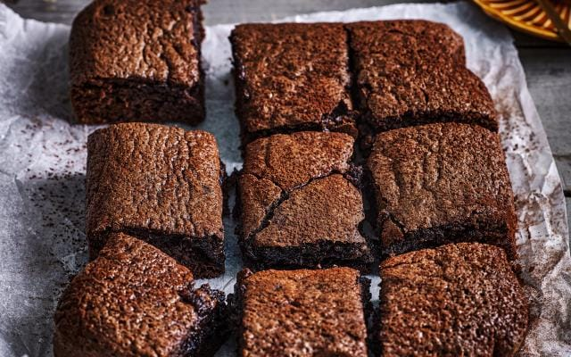

100 g pure chocolade (in stukjes)
100 g ongezouten roomboter
150 g bruine basterdsuiker (voor extra smeuïgheid) of kristalsuiker
2 grote eieren
50 g bloem (tarwebloem)
1 el (ca. 10g) cacaopoeder(ongezoet)
1 tl vanille-extract
(optioneel) Snufje zout Optioneel: 40-50g gehakte noten (walnoten/pecan) of extra chocoladestukjes, maar is niet zo zeer nodig.
